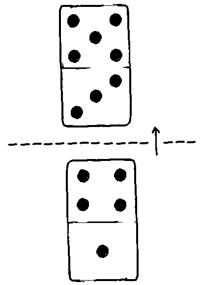
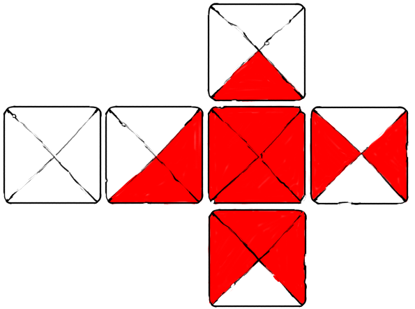
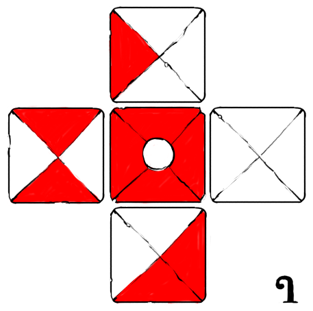
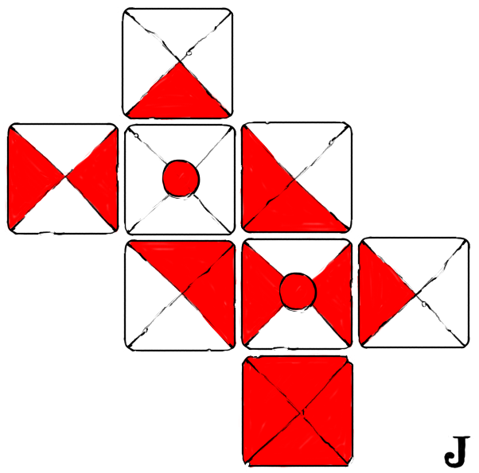
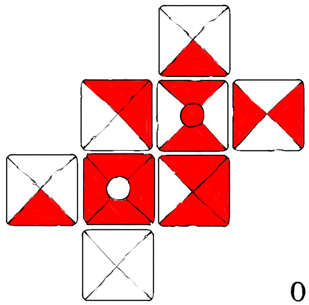
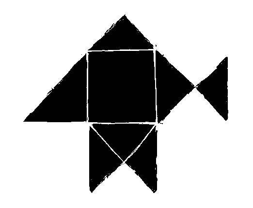

Little games to play with cards, dice, domino, or a Go board.
Domine is a 2-players domino game.
Each player draws a hand of seven dominoes and keeps them hidden from their opponent. The two numbers on either side of a domino are the Attack and Defense points, facing the opponent and the player respectively.
Each turn consists choosing which is the attack side and which is the defense side. Players alternate turns until all dominoes have been played. The player with the most living dominoes wins.
When a player attacks with a domino, the opponent must defend with a value equal to or higher than the attack. If the opponent's domino defense value is lower than the attack, the domino is killed. If the opponent's domino defense value is equal to or higher, then the domino survives.
Riposte and First-Strike
If the opponent survives and has an attack number higher than the player's domino defense value, the opponent wins over the player's domino in a riposte. Dominoes with equal sides have first-strike, meaning that they are played as attacking dominoes.

The player plays 4a1d, attacking by 4d. The opponent defends with 3a5d. The attack of 4d is blocked by 5d, and counters with a riposte of 3a, winning over 4a1d. The opponent wins this round, the player's domino is flipped.
Hako is a 2-players dice game.
Hako is a capture-type game, similar to Go, played with eight six-sided dice, each player has 4 dice, each of the six faces is unique and painted as four triangles with two different colors.

The unpainted side is called day, the painted is called night, the side with three painted triangles is called dawn, the side with three unpainted triangles is called dusk. A rope named the Sonozai, typically runs through the day and night faces and hold together a player's dice for safe carry.
How to Play
Players each pick a color, and begin with four dice. Each turn, a player rolls a die and put it into play to try and surround another die in play, with four triangles of its own color.

After playing their fourth and last die, players pick and reroll a die in play which was not played last and which does not create a floating die. A floating die is has no immediate orthogonal neighbor. The game ends when a player surrounds a die with four triangles of their color.

A special case can happen when a dice will create both a victory and a defeat, this state is called the Ho state, it is considered a draw.

The name Hako is the hexadecimal number 18, in Bibi Binary, which is the total number of faces on a Hako die. A paper Hako die can be made from a sonobe 6. The game was originally played by the Iridi people in Wiktopher. The Iridi die is a painted or engraved stone, textured dice are used when played in low-light settings or with blind players.

Donsol is a dungeon-crawler card game.
A standard deck of 54 cards, jokers included, is a dungeon. You begin with 21 health points. Shuffle the deck and draw 4 cards, display them before you, this is a room, pick cards until the room is empty or escape. Draw the next four cards, a game ends when the last card has been dealt with or you have no more health points.
You may escape if you have not escaped the previous room or if no monsters are left in the room. When escaping, the remaining cards are put back in the deck and the deck is shuffled.
♥︎ Heart Potions
A potion card gives you health points equal to its value but picture cards (J,Q,K,A) are worth 11.
Drinking multiple potions in a row, without picking a monster or shield card in-between, will make you sick and result in no healing, only the first potion's value will be gained. You can heal up to a maximum of 21 health points.
♦ Diamond Shields
A shield card gives you shield points equal to its value but picture cards (J,Q,K,A) are worth 11. A shield automatically absorbs damages inflicted by a monster up to its own value.
Once used against a monster, a shield can only defend against monsters of increasingly smaller values, using a shield on a monster with higher or equal value to the previous will break it and you receive the monster's full value in damage. Using a shield card will always replace a previously equipped shield.
♣♠ Club/Spade/Joker Monsters
A Monster card removes health points equal to its value, picture cards deal damage as follows J is 11, Q is 13, K is 15, A is 17 and Jokers are equal to 21.
The game was designed by John Eternal during Train Jam 2015 and shares a lot of similarities to Zach Gage & Kurt Bieg's Scoundrel(2011). Scoundrel uses 44 cards(no red face cards, aces and no jokers), a room can be skipped without clearing the monster cards and the distribution of values differ. As for other games in the same lineage, the balancing of Gamot and Card Crawl are closer to that of Donsol.